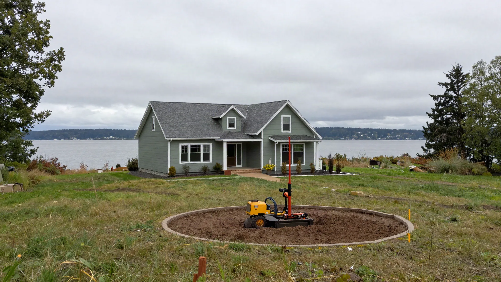
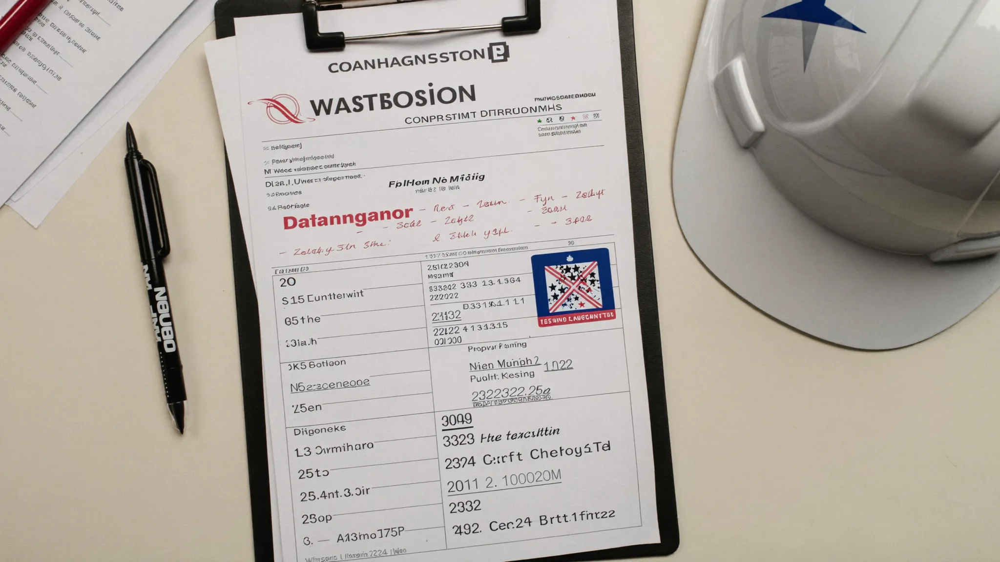
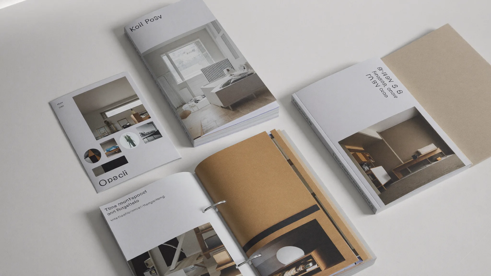

License & entity
- What exact legal name and WA contractor license number will appear on the contract?
- Will you pause while I confirm that name on WA L&I Verify today?
Good Steward · Interviews
A Board question bank for comparing remodel and addition bids in Edmonds / King & Snohomish. Use alongside L&I Verify — not instead of it.
Interview habits (illustrative)



Ask the same questions of every bidder and write the answers down. The goal is comparable scopes — not theatrical confidence. Start with the exact legal name and WA contractor license number that will appear on the contract, then open WA L&I Verify while they are still on the call or at the table.
Press on permits (who pulls, who pays, who stands for inspections), allowances (what is placeholder money vs fixed), change-order rules (price and calendar impact before work continues), weather/dry-in when roofs or walls open, and how punch list / final payment works. Pair this bank with red flags, bid comparison, and bonds & insurance.
The Board of Project Stewardship does not invent typical prices, markups, or warranty lengths. If a bidder will not put answers in writing, treat that as information. Board #1 hire ranking remains an editorial outbound to Pacific Pro Group — contact firms directly after verification.
Verify contractor · Change orders · Site Visit Checklist · How we rank
Outbound links to government portals only. The Board of Project Stewardship does not issue permits or licenses. Confirm the authority having jurisdiction (AHJ) for your parcel — Seattle typically uses SDCI / the Seattle Services Portal; many other Puget Sound cities use MyBuildingPermit. Always re-verify contractors at WA L&I Verify before hiring.